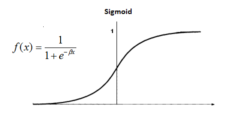

Supondo que as variaveis envolvidas podem ser plotadas numa curva da funcao: linear, sigmoide ou logistica, podemos modelar um componente para cada variavel, que vamos denominar de neuronio artificial (NA),

Um conjunto de NA ligados de forma unidirecional forma uma rede que vamos denominar rede neural artifical (RNA)
Os NA podem ter seus valores ajustados conforme ocorrem novos eventos
Um NA pode ter seus valores ajustados ate se tornar inutil na rede
Cada RNA tem um conjunto de NA especificos
Nao eh possivel reaproveitar os NA de outra RNA mesmo que cuidem das mesmas variaveis
Se for verificado uma variância alta o NA pode ser desativado se não for sinalizado como não desativavel
| miolo | ||||
| +------ | src | |||
| | | +------ | rna | (rede neural artificial) | |
| | | \----- | bco | ||
| +------ | bin | |||
| +------ | db | |||
| \----- | html |